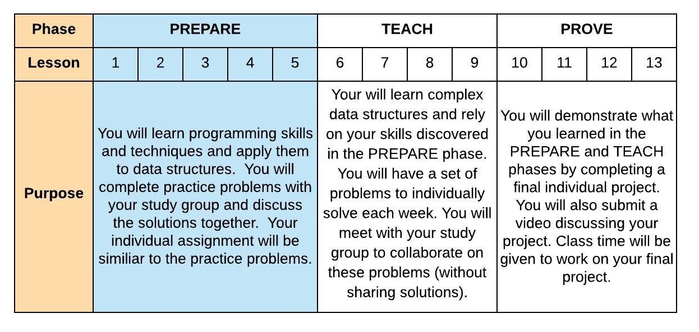
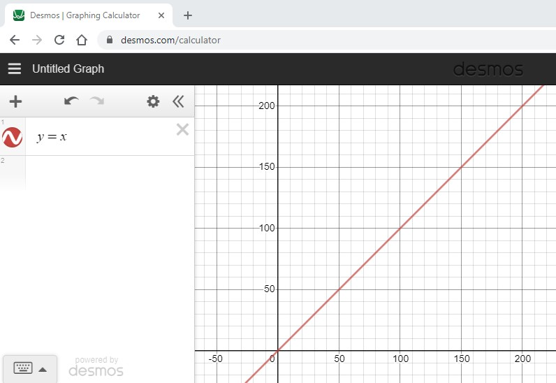
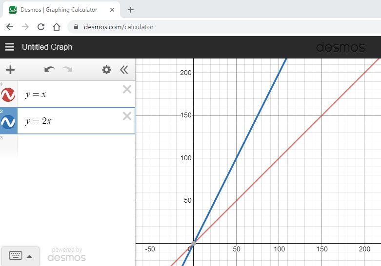
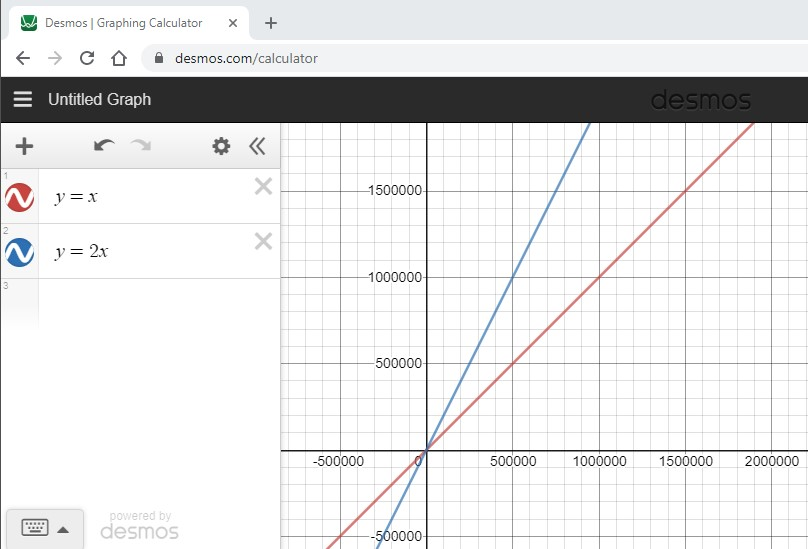
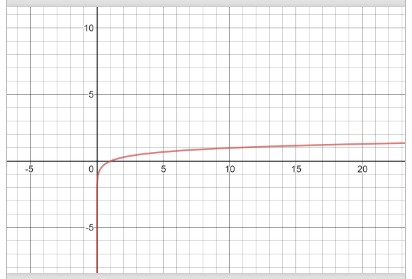

02 Prepare: Evaulate Performance of Alternative Solutions / Big-O Notation
Overview
This week you will explore skill of Evaluating Performance of Alternative Solutions. To support this evaluation, you will learn how to use Big-O notation (ref: Syllabus Course Outcome 2). You are still in the PREPARE phase of the course:
Here is the two day plan for this lesson:
Day 1 - Complete the reading below. The reading should take 1 hour to complete. For on-campus students, class time will be used to discuss the reading and explore Stacks through examples. Online students should spend an additional hour communicating with other students in Slack and reviewing any examples or information provided by your instructor. You should begin independently to work on 02-Prove. You should plan on the assignment taking 3 hours to complete.
Day 2 - You will work with your study group to complete 02-Teach. On-campus students will complete this activity during class time. The activity should take 1 hour to complete. You should independently finish work on 02-Prove.
Big-O Notation
To evaluate code and look for alternative solutions, it is important that we have a common method for quanitfying the performance of code in terms of time. The principles we will learn can also be applied to analysis of how much memory or space is used by code to perform a task.
Big-O Notation and Linear Performance
Big-O Notation is used to describe the performance of an algorithm (or function) for large sets of data. If we have two functions that do the same thing, we can use Big-O notation to compare the performance of the two functions. As a simple example, consider the following code which looks for the name "Bob" in a list of names:
def find_bob(name_list): for name in name_list: if name == "Bob": return True return False
The size of the data in this function is based on the size of the name_list. We will say that size of the data is n. The for loop in the code means that we will potentially run n times. This worst case potential will only happen if "Bob" is not in the list of names. Therefore, we say that the Big-O in the worst case is O(n). In general, when we ask for the Big-O of a function we are asking for the worst case scenario. This function does have a best case scenario. If "Bob" is the first name in the list, then the loop will only run one time. Therefore, we can say the Big-O in the best case is O(1). We call O(1) constant time. When looking at code, usually a single line of code like an assignment statement is considered O(1).
If a function has O(n) performance, then we also say that the function has linear performance. Using a graphing calculator or a graphing website (e.g. desmos.com) we can visually see the linear performance of O(n). The graph below show y=x which is used to represent O(n). When x (or n) gets bigger, the amount of work (y) gets larger in a linear way.
Consider the following code that has two loops in serial (one right after the other):
def multiple_loops(n): for i in range(n): print(i) for j in range(n): print(i**2)
In this function, each for loop contributes O(n) to the performance of the function. The total would be O(n) + O(n) = O(2 * n). If we graph this, O(2*n) does look like it has worst performance than O(n).
However, if we zoom very far out to very large values of n, we notice that the distance between O(n) and O(2*n) has not changed. While it is true O(2*n) will take twice as long, in the measurements of Big-O notation, they are equivalant since as we get to larger and larger values of n, the rate of increase (or decrease) has not changed. The coefficients in Big-O notation should be dropped. Therefore, instead of saying O(2*n) for the function above, we will say O(n).
Polynomial Performance
As seen earlier, the structure of the for loops is important to analyzing the Big-O performance for a function. Consider the following scenario:
def multiplication_table(n): for i in range(n): for j in range(n): print((i+1) * (j+1))
This function has a loop within a loop. Both loops are based on the size of the data. Instead of adding O(n) twice like we did with loops in serial, we multiply as follows: O(n) * O(n) = O(n^2). The rate of increase is much higher with an O(n^2) function compared to an O(n) function. The find_bob function would in the worst case take 1000 checks if the list size was 1000, but the multiplication_table will take 1000^2 = 1,000,000 print statements to complete for a similairly sized value of n. The graph for an O(n^2) function is shown below:
Caution should be used when look on loops within loops. If one of the loops is based on the size of the data but the other loop is not, it would be more accurate to characterize it as O(k * n) where k is a constant. Based on the rules we learned earlier O(k * n) = O(n) when k is a coefficient. The code below would be O(n) because the inner loop is only running 3 times but the outer loop is based on the size of the data.
def short_multiplication_table(n): for i in range(n): for j in range(3): print((i+1) * (j+1))
When we count iterations of a loops in a function, we may end up with complex polynomials that look like this. Assume that we had performance predicted at O(2*n^3 - 7*n^2 + 13*n - 15). In addition to dropping coefficients, we also drop lessor exponents like (in this example) the n^2 and the n. Therefore, O(2*n^3 - 7*n^2 + 13*n - 15) = O(n^3). This code likely has a loop, within a loop, within a loop.
Logarithmic Performance
It would seem like O(n) is the best performance you can get if we want to analyze a set of information. However, there are some algorithms that have better performance. Consider a function that had performance of O(log n). When graphed, the performance does not get signifcantly worse as the size of the data increases.
To find a function that has this type of performance, consider a list of sorted data: 2, 7, 12, 19, 31, 54, 68, and 91. If we wanted to determine if 68 was in the list, we could search from left to right looking for 68. Instead, we are going to treat this sorted list of numbers like a phone book. If you wanted to find a name in a phone book, we would likely use our knowledge of the alphabet to get their faster. A simple process could be to goto the item in the middle of the list (or the phone book) and determine if the number we are looking for is before or after the value in the middle. By doing this, we will discard half of the values in the list in support of our search. Using the remaining numbers, we will repeat the process by going to the middle and discarding half again. If we repeat this process, we will eventually either find the number of determine that the number does not exist.
Returning to our list of numbers, we will say 19 is in the middle (we started with an even number so we will use integer division to find the middle such as len(numbers)//2). Since 68 (the number we are looking for) is greater than 19, then we concentrate our search after the 19. The middle of the remaining numbers (31, 54, 68, and 91) is 54. Since 68 is great than 53, we will look at the numbers afterwards. The middle of the remaining numbers (68 and 91) is 68. Since 68 matches 68, we can say the number exists an it took us only 3 checks.
If we look at this generically, lets ask ourselves how many checks it will take if we had n numbers in the list. The worst case will occur if the number we are looking for is not in the list. Therefore, we want to know how many checks it will take (in terms of n) until we reach the point where there is only one item left in the list to check (because that means we don't have to look any further). To solve this problem, consider how many numbers are left after each check:
After check 1, we have
n/2 leftAfter check 2, we have
n/4 leftAfter check 3, we have
n/8 leftGenerally, after check
c, we haven/(2^c) left
Returning to the question, how many checks c until there are just 1 left. Written mathematically, we want to solve the following for c: n/(2^c) = 1. Using logarithms, we get c = log2(n) = log(n) / log(2) which results in a Big-O notation of O(log n) since the log(2) is a coefficient. The secret to getting O(log n) was to continously divide the data in half.
The process above relies on an important fact. The ability to find the middle of a list (or dynamic array as we learned last week) using a lookup operation is O(1). The next section will review why this is.
Performance of the Dynamic Arrays
Now that we have Big-O notation, we can characterize the performance of our data structure operations.
| Function | Description | Performance |
|---|---|---|
|
Performance of getting a value in the dynamic array using the index. Since the dynamic array is in contiguous memory, the equation address = starting_address + (item_size * index) can be used ot get the value in a dynamic array using the index quickly. | O(1) |
|
Performance of adding to the end of dynamic array. If the dynamic array is not full yet, then the cost is based on the lookup operation to goto the next open space. If the dynami array is full, then we need to create new memory which is twice the size and then copy the old memory. This is an O(n) operation because of the loop required. However, for large values of n, this copy doesn't happen very often. We can amortize (or spread out) the cost of the O(n) loop on all the previous append's that were filling up the dynamic array. Therefore, we say the worst case for appending in the dynamic array is O(1). | O(1) |
| insert(index, value) | Performance of inserting at the beginning or the middle of the dynamic array. When we insert anywhere but the end, we will need a loop to move all the items from the index to the end over by one position. This requires a loop which in the worst case will require moving all items in the list. | O(n) |
| remove(index, value) | Performance of removing an element in the list. When we remove, we have to move all items over by one position towards the begining of the list. This requires a loop which in the worst case will require moving all items in the list. However, in the case of removing the last item in the list, there is nothing to move over. This scenario will be O(1). | O(n) except for removing the last one which is O(1) |
| len() | Performance of returning the size of the dynamic array. The class for the dynamic array data structure will keep track of how many items are currently in the list so no loop is required. | O(1) |
| is_empty() | Performance of checking the size of the dynamic array | O(1) |
Evaulate Performance of Alternative Solutions
Analyze Performance
The real benefit of using Big-O notation is to find a way to compare and contrast one or more functions that perform the same task. Its possible that we have written one function that functionally works very well. However, when we run the function, it is taking to long to complete. When code takes to long the user may have a user interface that is unresponsive or the software may miss requests arriving from external sources. When this happens, we need to analyze the Big-O notation of our code and look for ways to improve it with a new function.
We should not be satisified with the funcitonality of our code only. We should always consider the performance. In addition to looking at timing, we can also perform a similair analysis on the amount of memory our functions use. It is possible to write code in many different ways but not all solutions may have the best performance. We should always check the performance of our code especially when loops are involved. Care should be taken when multiple functions are used in software. If one function has a loop and calls another set of functions within that loop, the performance of the other functions needs to be done.
Measure Actual Execution Time
When we analyze performance, we are making a prediction. Frequently we need to perform tests to benchmark (i.e. measure) the actual performance of the functions we are using. In Python, the timeit library provides a capability to measure how much time was spent was spent executing a function. Consider the following example:
import timeit
def lots_of_loops(n):
total = 0
for i in range(n):
for j in range(n):
for k in range(n):
total += (i*j*k)
print(total)
time = timeit.timeit("lots_of_loops(100)", number=10, globals=globals()) / 10 * 1000
# The time displayed will vary based on your computer
print("Time in milliseconds = {}".format(time))
In the line of code setting the time variable:
"lots_of_loops(100)" => This is the code that will be executed and timed
number=10 => This means the lots_of_loops function will be executed 10 times in serial
globals=globals() => This will give access to your lots_of_loops function inside the timeit function
/ 10 => This will get the average time for the 10 executions
* 1000 => This will convert the result from seconds to milliseconds
Another way to look at actual performance is to insturment the code by adding a variable that counts how much work is performed. This variable can then be returned.
def lots_of_loops(n):
total = 0
count = 0 # Instrumented code
for i in range(n):
for j in range(n):
for k in range(n):
total += (i*j*k)
count += 1 # Instrumented code
print(total)
return count
work = lots_of_loops(1000)
# This will display 1000000
print("Work = {}".format(work))